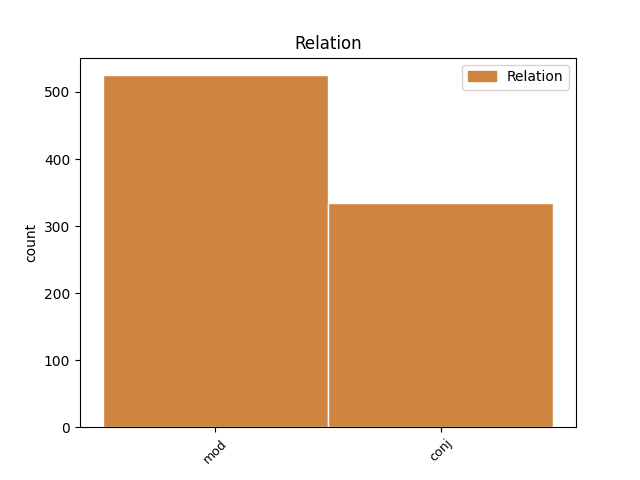
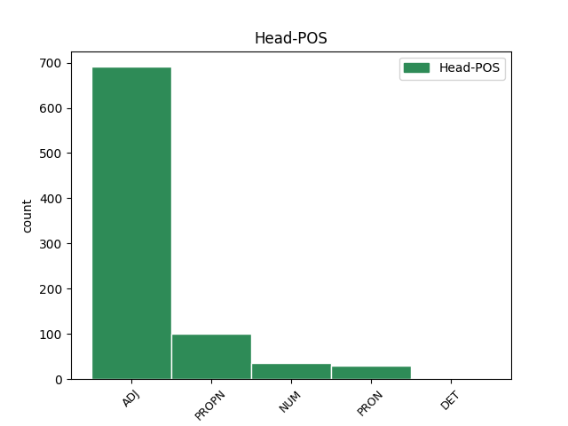
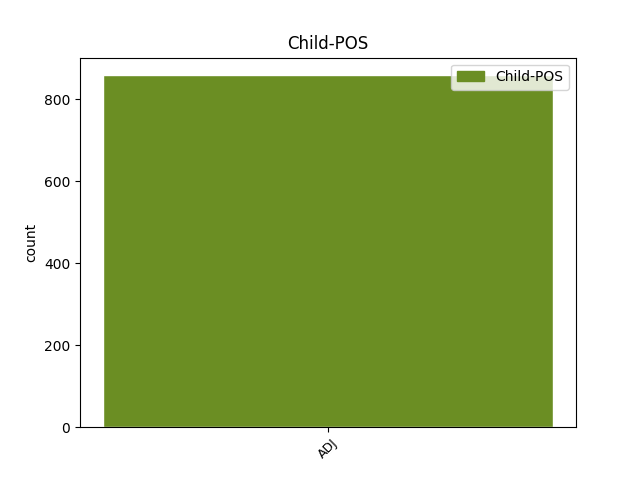

Distribution of features within this leaf



Agreement Rules sorted by frequency.
- When the dependent token is the conjunct(conj) of the head token, and the head token is ADJ and the dependent token is ADJ.
1 Tämä _ _ _ _ 0 _ _ _
2 on _ _ _ _ 0 _ _ _
3 epävirallinen _ _ _ _ 0 _ _ _
4 keskustelu _ _ _ _ 0 _ _ _
5 , _ _ _ _ 0 _ _ _
6 ja _ _ _ _ 0 _ _ _
7 kaikenlaiset kaikenlainen ADJ A,Qnt,Pl,Nom Case=Nom|Number=Plur|PronType=Ind 0 _ _ _
8 seikat _ _ _ _ 0 _ _ _
9 ovat _ _ _ _ 0 _ _ _
10 tutkimuksissa _ _ _ _ 0 _ _ _
11 tärkeitä _ _ _ _ 0 _ _ _
12 , _ _ _ _ 0 _ _ _
13 pienetkin pieni ADJ A,Pl,Nom,Kin Case=Nom|Clitic=Kin|Number=Plur 7 conj _ _
14 . _ _ _ _ 0 _ _ _
1 Iso iso ADJ A,Sg,Nom Case=Nom|Number=Sing 2 mod _ _
2 iso iso ADJ A,Sg,Nom Case=Nom|Number=Sing 0 _ _ _
3 tuska _ _ _ _ 0 _ _ _
4 . _ _ _ _ 0 _ _ _
1 Kuullos _ _ _ _ 0 _ _ _
2 pyhä _ _ _ _ 0 _ _ _
3 vala _ _ _ _ 0 _ _ _
4 , _ _ _ _ 0 _ _ _
5 kallis kallis ADJ A,Sg,Nom Case=Nom|Number=Sing 6 mod _ _
6 Suomenmaa suomenmaa PROPN N,Prop,Sg,Nom Case=Nom|Number=Sing 0 _ _ _
1 Eli _ _ _ _ 0 _ _ _
2 luvassa _ _ _ _ 0 _ _ _
3 on _ _ _ _ 0 _ _ _
4 vielä _ _ _ _ 0 _ _ _
5 toiset toinen ADJ A,Ord,Pl,Nom Case=Nom|Number=Plur|NumType=Ord 6 mod _ _
6 kaksi kaksi NUM Num,Card,Sg,Nom Case=Nom|Number=Sing|NumType=Card 0 _ _ _
7 vuotta _ _ _ _ 0 _ _ _
8 hauskaa _ _ _ _ 0 _ _ _
9 nuorisohömppää _ _ _ _ 0 _ _ _
10 ? _ _ _ _ 0 _ _ _
1 Minä _ _ _ _ 0 _ _ _
2 luulin _ _ _ _ 0 _ _ _
3 , _ _ _ _ 0 _ _ _
4 ett _ _ _ _ 0 _ _ _
5 ette _ _ _ _ 0 _ _ _
6 te te PRON Pron,Pers,Pl2,Nom Case=Nom|Number=Plur|Person=2|PronType=Prs 0 _ _ _
7 buddhalaiset buddhalainen ADJ A,Pl,Nom Case=Nom|Number=Plur 6 mod _ _
8 saa _ _ _ _ 0 _ _ _
9 tappaa _ _ _ _ 0 _ _ _
10 , _ _ _ _ 0 _ _ _
11 mutisin _ _ _ _ 0 _ _ _
12 nolona _ _ _ _ 0 _ _ _
13 . _ _ _ _ 0 _ _ _
1 tottahan _ _ _ _ 0 _ _ _
2 tuon _ _ _ _ 0 _ _ _
3 tiennöön _ _ _ _ 0 _ _ _
4 kuka _ _ _ _ 0 _ _ _
5 se _ _ _ _ 0 _ _ _
6 mikä mikä PRON Pron,Interr,Sg,Nom Case=Nom|Number=Sing|PronType=Int 0 _ _ _
7 se _ _ _ _ 0 _ _ _
8 minkälainen minkälainen ADJ A,Interr,Sg,Nom Case=Nom|Number=Sing|PronType=Int 6 conj _ _
9 on _ _ _ _ 0 _ _ _
1 Kaisusta kaisu PROPN N,Prop,Sg,Ela Case=Ela|Number=Sing 0 _ _ _
2 ja _ _ _ _ 0 _ _ _
3 lapualaisesta lapualainen ADJ A,Sg,Ela Case=Ela|Number=Sing 1 conj _ _
4 sille _ _ _ _ 0 _ _ _
5 olivat _ _ _ _ 0 _ _ _
6 kertoneet _ _ _ _ 0 _ _ _
7 kaikki _ _ _ _ 0 _ _ _
8 heti _ _ _ _ 0 _ _ _
9 , _ _ _ _ 0 _ _ _
10 kun _ _ _ _ 0 _ _ _
11 minusta _ _ _ _ 0 _ _ _
12 oli _ _ _ _ 0 _ _ _
13 tullut _ _ _ _ 0 _ _ _
14 puhe _ _ _ _ 0 _ _ _
15 . _ _ _ _ 0 _ _ _
1 Mut _ _ _ _ 0 _ _ _
2 siin _ _ _ _ 0 _ _ _
3 onki _ _ _ _ 0 _ _ _
4 joku _ _ _ _ 0 _ _ _
5 samanlainen samanlainen ADJ A,Qnt,Sg,Nom Case=Nom|Number=Sing|PronType=Ind 8 mod _ _
6 tota _ _ _ _ 0 _ _ _
7 ee _ _ _ _ 0 _ _ _
8 semmonen semmoinen DET A,Dem,Sg,Nom Case=Nom|Number=Sing|PronType=Dem|Style=Coll 0 _ _ _
9 miten _ _ _ _ 0 _ _ _
10 sen _ _ _ _ 0 _ _ _
11 nyt _ _ _ _ 0 _ _ _
12 sanois _ _ _ _ 0 _ _ _
13 värin _ _ _ _ 0 _ _ _
14 syvyys _ _ _ _ 0 _ _ _
15 näis _ _ _ _ 0 _ _ _
16 kaikissa _ _ _ _ 0 _ _ _
17 . _ _ _ _ 0 _ _ _
1 Ensi _ _ _ _ 0 _ _ _
2 sitä _ _ _ _ 0 _ _ _
3 , _ _ _ _ 0 _ _ _
4 kolmee kolme NUM Num,Card,Sg,Par Case=Par|Number=Sing|NumType=Card|Style=Coll 0 _ _ _
5 niin _ _ _ _ 0 _ _ _
6 ku _ _ _ _ 0 _ _ _
7 tonne _ _ _ _ 0 _ _ _
8 ylöspäin _ _ _ _ 0 _ _ _
9 näij _ _ _ _ 0 _ _ _
10 ja _ _ _ _ 0 _ _ _
11 , _ _ _ _ 0 _ _ _
12 sitte _ _ _ _ 0 _ _ _
13 alaspäi _ _ _ _ 0 _ _ _
14 seuraavaa seuraava ADJ A,Sg,Par Case=Par|Number=Sing 4 conj _ _
Disagree Examples:
1 Palvelualttius _ _ _ _ 0 _ _ _
2 on _ _ _ _ 0 _ _ _
3 tyydyttävä tyydyttävä ADJ A,Sg,Nom Case=Nom|Number=Sing 0 _ _ _
4 , _ _ _ _ 0 _ _ _
5 mutta _ _ _ _ 0 _ _ _
6 huoneen _ _ _ _ 0 _ _ _
7 saanti _ _ _ _ 0 _ _ _
8 vaikeata vaikea ADJ A,Sg,Par Case=Par|Number=Sing 3 conj _ _
9 . _ _ _ _ 0 _ _ _
1 Isäni _ _ _ _ 0 _ _ _
2 kertoman _ _ _ _ 0 _ _ _
3 mukaan _ _ _ _ 0 _ _ _
4 kello _ _ _ _ 0 _ _ _
5 on _ _ _ _ 0 _ _ _
6 erikoisen erikoinen ADJ A,Sg,Gen Case=Gen|Number=Sing 7 mod _ _
7 tarkka tarkka ADJ A,Sg,Nom Case=Nom|Number=Sing 0 _ _ _
8 testattu _ _ _ _ 0 _ _ _
9 yksilö _ _ _ _ 0 _ _ _
10 . _ _ _ _ 0 _ _ _
1 uskomattoman _ _ _ _ 0 _ _ _
2 ruman ruma ADJ A,Sg,Gen Case=Gen|Number=Sing 3 mod _ _
3 sävyinen sävyinen ADJ A,Sg,Nom Case=Nom|Number=Sing 0 _ _ _
4 kangas _ _ _ _ 0 _ _ _
1 hyvän hyvä ADJ A,Sg,Gen Case=Gen|Number=Sing 2 mod _ _
2 kypsynen kypsyinen ADJ A,Sg,Nom Case=Nom|Number=Sing|Style=Coll 0 _ _ _
3 ruoka _ _ _ _ 0 _ _ _
1 melkeinpä _ _ _ _ 0 _ _ _
2 öljymäisen öljymäinen ADJ A,Sg,Gen Case=Gen|Number=Sing 3 mod _ _
3 tasainen tasainen ADJ A,Sg,Nom Case=Nom|Number=Sing 0 _ _ _
4 meri _ _ _ _ 0 _ _ _